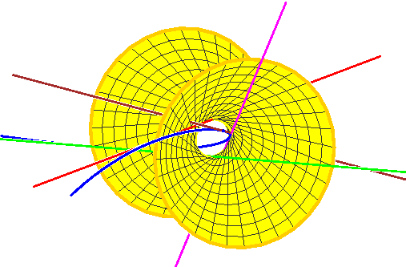

Frontiers of Reality in Schubert Calculus
7 January 2009
Current Events Bulletin
AMS National Meeting
Washington, DC
| |
|

| |
Frank Sottile
Texas A&M University
|
The Shapiro conjecture for Grassmannians (now a
Theorem of Mukhin, Tarasov, and Varchenko) asserts
that all (a priori complex-number) solutions to
certain geometric problems from the Schubert calculus
are actually real. Their proof is quite remarkable,
using ideas from integrable systems and representation
theory.
Despite these advances, the full Shapiro conjecture
remains open with several interesting and not quite
understood generalizations that are likely true.
This talk will introduce the Shapiro conjecture
for Grassmannians and its links to subjects from
combinatorics to complex analysis to control theory and
then give an idea of its proofs and consequences, and
its extensions.
| |

|
|